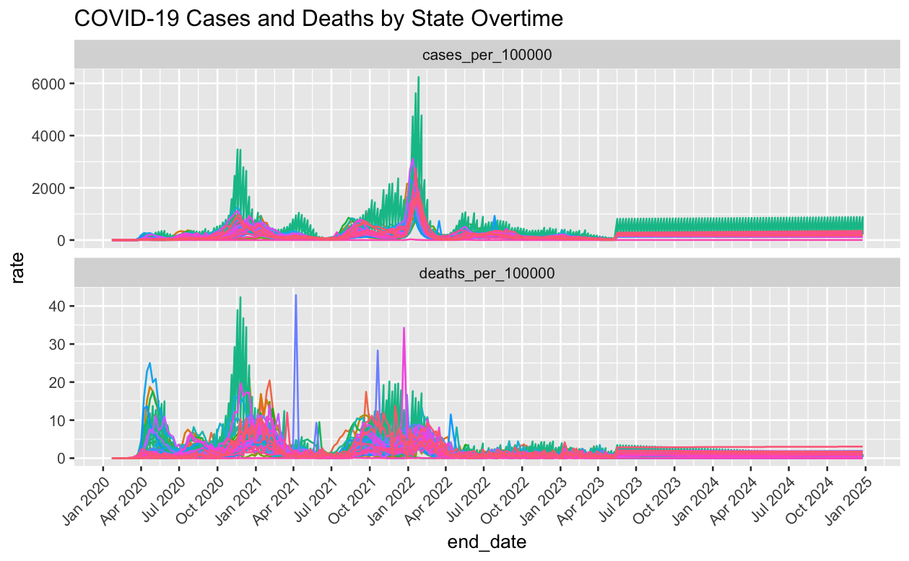
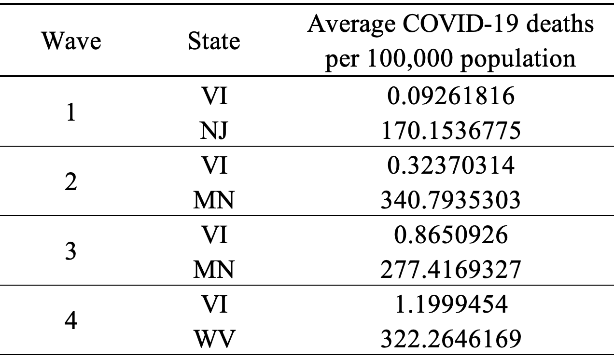
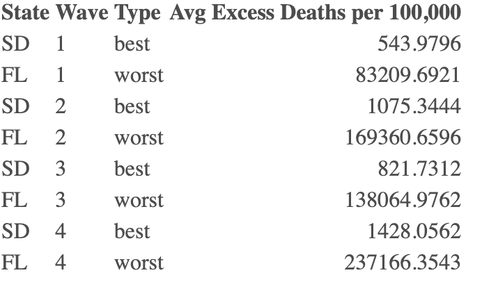

final-project
Cici Cheng & Maya Harwood BST 260 20 December 2024
Abstract
Just months after SARS-CoV-2 began spreading across the globe, COVID-19 became a leading cause of death in the United States. However, mortality surveillance has often excluded COVID-19 patients who died of comorbidities, underestimating the pandemic’s death toll. Our project has two aims: first, compute and compare deaths rates by state from January 2020 to December 2024, and second, determine if COVID-19 deaths explain changes in estimated excess mortality rates during the same period. We use data from the CDC and US Census Bureau to identify four waves of COVID-19 cases and deaths, calculate COVID-19 death rates and excess deaths for each state, and compare these rates across the four defined periods. The US Virgin Islands consistently demonstrated the lowest COVID-19 death rates, while New Jersey and Minnesota experienced some of the highest burden of disease during various waves of the pandemic. South Dakota consistently held the lowest excess mortality rate, while Florida consistently had the highest. However, when comparing these rates to the statistical model’s estimated mortality, we found that COVID-19 deaths did not fully account for the excess mortality.These findings highlight the need for targeted interventions to address state-level barriers to the prevention and treatment of COVID-19 and other respiratory infectious diseases.
Introduction
The COVID-19 pandemic vastly impacted public health on a global scale, with the United States emerging as a leader in morbidity and mortality. From late 2019 onward, the transmission of SARS-CoV-2, the virus that causes COVID-19, followed a pattern of successive waves that overwhelmed healthcare systems attempting to treat growing numbers of COVID-19 patients. As public health practitioners worked to understand the impact of the pandemic on mortality in the US, underestimation caught the attention of academia, government agencies, and the general public as a barrier to accurate estimates. Many mortality surveillance systems failed to account for COVID-19 patients whose deaths were primarily attributed to pre-existing comorbidities, masking the true toll of the illness on populations across states.
As the pandemic progressed, it became evident that the impact of COVID-19 was far from uniform. Significant disparities emerged between states, influenced by factors such as population density, healthcare infrastructure, policy responses, and the timing of interventions like mask mandates and vaccination campaigns. These differences underscore the importance of analyzing COVID-19 outcomes at the state level to identify patterns and determinants of mortality. Such analysis is crucial for informing future pandemic preparedness and response strategies, particularly in understanding how public health measures can mitigate disparities in disease outcomes.
Another critical aspect of the pandemic was the evolving virulence of SARS-CoV-2. Over time, new variants emerged with varying levels of transmissibility and severity. These changes in viral characteristics, combined with shifting levels of immunity from vaccination and prior infections, contributed to fluctuating mortality rates across different waves of the pandemic. Investigating these trends provides valuable insights into how viral evolution interacts with population health measures to influence overall disease burden. Additionally, analyzing state-level differences in death rates offers a unique opportunity to assess how factors like healthcare access and public health policies affect the virulence of a disease in real-world settings.
This project aims to address several key questions: How did COVID-19 mortality vary across states and pandemic waves? Which states experienced the lowest and highest death rates during each period, and what factors may explain these disparities? Can trends in excess mortality be explained by COVDI-19? We aim to advance our understanding of the pandemic’s effects on the US and provide actionable insights for improving public health systems in the face of future outbreaks of respiratory infectious diseases.
Methods
To investigate trends in COVID-19 and excess mortality from January 2020 to December 2024, we conducted an analysis using the tidyverse package in R. We sourced data from the CDC and the US Census Bureau. The initial dataset included weekly COVID-19 cases and death counts by state. Using R, we formatted date columns to ensure consistency in temporal variables and filtered out entries with negative values for new deaths to address data errors. Population data, spanning 2020 to 2024, was reshaped into a long format to facilitate dynamic merging with the COVID-19 dataset. This allowed us to match each row in the COVID-19 dataset with its corresponding population estimate based on state and year. Any missing values were handled by calculating the mean population for each state.
The CDC, and other public health agencies, stopped collecting COVID-19 case and death counts in May 2023. To extend the dataset beyond the last recorded week of data, we used linear regression models to extrapolate weekly case and death counts for each state through December 2024. The extrapolated data was merged with the original dataset to create a comprehensive record covering the entire study period. To ensure realistic predictions, constraints were applied to the regression output to prevent negative values. The study period was divided into four waves based on patterns in cases and deaths observed in a time series plot. The waves were as follows: January 2020 to July 2020, August 2020 to July 2021, August 2021 to April 2022, and May 2023 to December 2024. Each observation was assigned to a wave based on its end date. These waves served as a framework for analyzing trends in mortality throughout the pandemic.
Death rates per 100,000 population were calculated for each state and wave by summing weekly deaths within each wave and dividing by the average state population during the same period. These rates were scaled to a per-100,000 basis to allow for comparisons across states. To identify states with the best and worst outcomes during each wave, we determined the states with the lowest and highest death rates. Additionally, to investigate trends in virulence of COVID-19, we analyzed death rates as a proxy for disease severity. The average number of deaths per 100,000 population was computed for each wave, providing insight into shifts in the lethality of the virus over time.
Excess mortality is defined as the difference between the observed number of deaths from all causes during the pandemic and the expected number of deaths based on historical mortality data. To estimate weekly expected deaths, we employed an over-dispersed Poisson model (R package: excessmort), which accounts for temporal trends, seasonality, and natural variability in mortality. This model has been validated through simulations and against historical data. We then compared the difference between the expected and observed deaths, to assess whether COVID-19-related deaths could explain the excess mortality. If observed excess deaths exceed the expected number, it suggests that COVID-19-related deaths could account for the excess mortality. Conversely, if observed excess deaths are lower than or equal to the expected number, it indicates that COVID-19 is unlikely to explain the excess mortality.
Similar to the way of calculating the average COVID-19 deaths, excess mortality per 100,000 population was calculated for each state and wave by summing weekly excess deaths within each wave and dividing by the average state population during the same period. These rates were scaled to a per-100,000 basis to allow for comparisons across states. To identify states with the best and worst outcomes during each wave, we determined the states with the lowest and highest excess mortality rates.
Results
This analysis examined COVID-19 mortality trends across the United States from January 2020 to December 2024. The results highlight significant temporal and geographic disparities in death rates, offering insights into the factors driving these differences.
The figure below illustrates the progression of COVID-19 death rates across states during the four pandemic waves: January to July 2020, August 2020 to July 2021, August 2021 to April 2022, and May 2023 to December 2024. Each wave reflects a distinct pattern of peaks and troughs, corresponding to changes in transmission dynamics, public health interventions, and healthcare capacity. The first wave was characterized by steep mortality, highlighting the devastating impact of initial outbreaks. Subsequent waves showed more geographically dispersed patterns. The final wave, extending through late 2024, exhibited lower mortality overall, reflecting widespread vaccination efforts and improved treatment options.

The states with the lowest and highest death rates during each wave are presented in the table below. The US Virgin Islands consistently ranked as the state with the lowest mortality rates across all waves, benefiting from its small population, isolated geography, and early implementation of public health measures. In contrast, states like New Jersey and Minnesota recorded the highest death rates during the pandemic’s most severe waves. The disparities underscore how state-specific factors, such as population density, healthcare infrastructure, and policy responses, shaped mortality outcomes. Notably, states with higher levels of poverty and limited healthcare access tended to fare worse, suggesting that systemic inequities exacerbated the pandemic’s impact in vulnerable communities.

To assess changes in the virulence of COVID-19, we analyzed COVID-19 deaths per 10,000 population at the national level as a proxy for disease severity. The highest death rate was observed during the second wave, when limited knowledge of the virus and shortages of medical supplies hampered effective treatment. Over subsequent waves, improvements in clinical care and the availability of vaccines contributed to a decline in virulence, as reflected in lower death rate. By the final wave, mortality had stabilized at relatively low levels, underscoring the role of widespread immunity in mitigating disease severity.
Overall, we identified substantial differences in COVID-19 death rates across states and waves, shaped by a combination of public health factors. States with robust healthcare infrastructure and proactive public health measures, such as the US Virgin Islands, consistently achieved better outcomes, while systemic inequities left other states disproportionately affected. Changes in virulence over time emphasize the need for long-term public health strategies during health crises.
To determine whether COVID-19 deaths can account for the excess mortality, we compared the observed and expected excess deaths. Our model-based estimates revealed that in 46,789 instances (45%), observed excess deaths were greater than expected, while in 46,789 instances (55%), observed excess deaths were lower than expected. Based on these findings, we can conclude that COVID-19 deaths do not fully account for the excess mortality.
The table below shows the states with the lowest and highest excess death rates during each wave. South Dakota consistently had the lowest mortality rates across all waves, likely due to its relatively low population and population density, which helped reduce the transmission of infectious diseases like COVID-19. On the other hand, Florida consistently reported the highest death rates during the pandemic’s most severe waves. Similar to the COVID-19 mortality rates discussed earlier, states with higher poverty levels and limited healthcare access generally experienced worse outcomes, indicating that systemic inequities worsened the pandemic’s impact on vulnerable communities. 
Discussion
This analysis of mortality trends in the United States from January 2020 to December 2024 provides critical insights into how the pandemic impacted public health at the state level. By examining death rates across four distinct waves, the study highlights significant disparities influenced by state-level factors such as unique public health interventions, geography, and access to healthcare.
The findings reveal that states with robust healthcare infrastructure and low population density, such as the U.S. Virgin Islands, consistently achieved the lowest mortality rates. Conversely, states like New Jersey and Minnesota experienced some of the highest death rates during the most severe pandemic waves. These geographic disparities underscore the importance of equitable access to healthcare and the need for targeted interventions in states with greater socioeconomic vulnerabilities. For instance, states with higher poverty levels or limited hospital capacity faced compounding challenges that intensified the pandemic’s impact. This emphasizes the necessity of bolstering healthcare systems and addressing structural inequities to better prepare for future health crises.
Trends in virulence trends provide additional insights into how the pandemic evolved. Deaths per 100,000 population, used as a proxy for disease severity, were highest during the second wave, reflecting overwhelmed healthcare systems and the absence of vaccines. Over subsequent waves, increased knowledge of COVID-19 and subsequent advancements in prevention and clinical care mitigated death rates. By the fourth wave, mortality stabilized at lower levels, indicating that widespread immunity, whether through vaccination or prior infections, played a critical role in reducing disease severity. These findings underscore the importance of continued investment in vaccine development and distribution, as well as maintaining public health infrastructure capable of responding to emerging respiratory infectious diseases.
The results suggest that COVID-19 deaths alone cannot explain all excess mortality, and several factors may contribute to this. One key reason is that not all deaths directly attributed to the pandemic were caused by COVID-19 itself. While COVID-19 is primarily an infectious disease, it is not always immediately fatal, particularly in its later stages. In fact, one of the most significant concerns associated with COVID-19 is its impact on people with pre-existing conditions, especially the elderly. COVID-19 can exacerbate underlying diseases like heart disease, diabetes, and respiratory conditions, making individuals more susceptible to death. Furthermore, even after recovery, individuals may face long-term health consequences, including chronic fatigue, lung damage, and neurological effects. This long-term damage, often referred to as post-acute sequelae of SARS-CoV-2 infection (PASC), could contribute to excess deaths months after recovery. Thus, the impact of COVID-19 on overall mortality may extend beyond immediate death tolls, leading to a time lag between infection and death.
Regarding the consistency in the states with the lowest and highest excess death rates across waves, this persistence likely reflects broader systemic factors that were in place throughout the pandemic. States like South Dakota, with low population density, may have benefitted from slower COVID-19 transmission, as fewer people living in closer proximity means less frequent spread of the virus. Lower population density can limit the rapid spread of infectious diseases like COVID-19, leading to lower excess mortality in these states. In contrast, Florida, with its higher population density, particularly in urban areas, may have faced challenges in controlling the virus’ spread. Higher population density increases the likelihood of COVID-19 transmission, as people are in closer contact with one another, making it harder to implement effective social distancing measures.
Our project has a few notable limitations. First, the reliance on reported case and death data may introduce biases due to underreporting or inconsistencies in surveillance systems. Additionally, While extrapolation techniques allow for comprehensive data coverage through 2024, these projections are inherently uncertain and should be interpreted cautiously. When investigating trends in virulence, the use of death rates as a measure of virulence does not account for other negative outcomes of COVID-19 such as long COVID. Finally, this analysis did not incorporate vaccination or hospitalization rates, so generalizations about pandemic severity could be more accurate had these factors been considered.
Despite these limitations, the findings provide actionable insights for future public health efforts. Policymakers should prioritize investments in equitable healthcare access and outbreak control measures at the community level. Future research could focus on improving COVID-19 surveillance to facilitate analyses on recent trends in cases and deaths. Additionally, further investigation into the impact of SARS-CoV-2 evolution on virulence could inform strategies for managing future upticks in cases and deaths.
In conclusion, this study highlights the substantial geographic and temporal disparities in COVID-19 mortality across the United States during the pandemic. By identifying key factors that influenced outcomes, the findings offer valuable lessons for strengthening pandemic preparedness and response. Addressing state-level inequities and ensuring access to healthcare is essential to preventing public health emergencies.